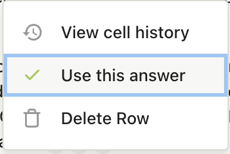

Column Styling¶
The set_column_style method allows you to configure various aspects of a column in the Agentic Table, including width, filters, cell renderers, and editability.
AgenticTableService.set_column_style(
column=column,
width=width,
cell_renderer=cell_renderer,
filter=filter,
editable=editable
)
Parameters¶
column (int, required)¶
The column index (0-based) to style.
width (int | None, optional)¶
The width of the column in pixels.
cell_renderer (CellRendererTypes | None, optional)¶
The type of cell renderer to use for the column. See Column Renderers section below.
filter (FilterTypes | None, optional)¶
The type of filter to apply to the column. See Column Filters section below.
editable (bool | None, optional)¶
Whether the column cells are editable by users.
Column Width¶
Set the width of a column in pixels.
Example:
from unique_toolkit.agentic_table import AgenticTableService
service = AgenticTableService(
user_id="user_123",
company_id="company_456",
table_id="table_789"
)
# Set column width to 300 pixels
await service.set_column_style(column=0, width=300)
Column Filters¶
Filters allow users to filter rows based on column values. Different filter types provide different filtering capabilities.
Available Filter Types:
FilterTypes.VALUE_MATCH_FILTER: Exact value matching filterFilterTypes.PARTIAL_MATCH_FILTER: Partial/substring matching filterFilterTypes.REFERENCE_FILTER: Filter based on referencesFilterTypes.HALLUCINATION_FILTER: Filter by hallucination scoresFilterTypes.REVIEW_STATUS_FILTER: Filter by review statusFilterTypes.ASSIGNEE_FILTER: Filter by assignee
Example:
from unique_toolkit.agentic_table import AgenticTableService, FilterTypes
service = AgenticTableService(
user_id="user_123",
company_id="company_456",
table_id="table_789"
)
# Add a value match filter to column 2
await service.set_column_style(
column=2,
filter=FilterTypes.VALUE_MATCH_FILTER
)
# Add a review status filter to column 4
await service.set_column_style(
column=4,
filter=FilterTypes.REVIEW_STATUS_FILTER
)
Column Renderers¶
Cell renderers control how cells are displayed and interacted with in the column. Different renderer types provide different UI components and behaviors.
Available Cell Renderer Types:
CellRendererTypes.CHECKBOX_LOCK_CELL_RENDERER: Renders cells as checkboxes with lock functionalityCellRendererTypes.COLLABORATOR_DROPDOWN: Renders a dropdown for selecting collaborators

CellRendererTypes.REVIEW_STATUS_DROPDOWN: Renders a dropdown for selecting review status
 -
- CellRendererTypes.CUSTOM_CELL_RENDERER: Markdown renderer for rendering markdown text
- CellRendererTypes.SELECTABLE_CELL_RENDERER: Markdown rendering + cells as selectable (for cell selection functionality)
Example:
from unique_toolkit.agentic_table import AgenticTableService, CellRendererTypes
service = AgenticTableService(
user_id="user_123",
company_id="company_456",
table_id="table_789"
)
# Set a review status dropdown renderer for column 3
await service.set_column_style(
column=3,
cell_renderer=CellRendererTypes.REVIEW_STATUS_DROPDOWN
)
# Set a collaborator dropdown renderer for column 5
await service.set_column_style(
column=5,
cell_renderer=CellRendererTypes.COLLABORATOR_DROPDOWN
)
# Set a selectable cell renderer for column 2
await service.set_column_style(
column=2,
cell_renderer=CellRendererTypes.SELECTABLE_CELL_RENDERER
)
Column Editability¶
Control whether users can edit cells in a column. When set to False, the column becomes read-only.
Example:
from unique_toolkit.agentic_table import AgenticTableService
service = AgenticTableService(
user_id="user_123",
company_id="company_456",
table_id="table_789"
)
# Make column 0 read-only
await service.set_column_style(column=0, editable=False)
# Make column 1 editable
await service.set_column_style(column=1, editable=True)
Selectable Cells¶
To enable cell selection functionality in a column, use the SELECTABLE_CELL_RENDERER renderer type. This allows users to select individual cells, which can then be used with cell metadata (see Cell Rendering for more details on cell selection).

Example:
from unique_toolkit.agentic_table import (
AgenticTableService,
CellRendererTypes
)
service = AgenticTableService(
user_id="user_123",
company_id="company_456",
table_id="table_789"
)
# Enable selectable cells in column 2
await service.set_column_style(
column=2,
cell_renderer=CellRendererTypes.SELECTABLE_CELL_RENDERER
)
Complete Example¶
Configure multiple column properties at once:
from unique_toolkit.agentic_table import (
AgenticTableService,
CellRendererTypes,
FilterTypes
)
service = AgenticTableService(
user_id="user_123",
company_id="company_456",
table_id="table_789"
)
# Configure a column with width, renderer, filter, and editability
await service.set_column_style(
column=0,
width=300,
cell_renderer=CellRendererTypes.REVIEW_STATUS_DROPDOWN,
filter=FilterTypes.REVIEW_STATUS_FILTER,
editable=True
)
# Configure another column as read-only with selectable cells
await service.set_column_style(
column=1,
width=400,
cell_renderer=CellRendererTypes.SELECTABLE_CELL_RENDERER,
editable=False
)
# Update only the width of an existing column
await service.set_column_style(
column=2,
width=250
)
Notes¶
- All parameters except
columnare optional. You can update any combination of column properties. - Setting a parameter to
Nonewill not change that field's current value. - Column styling is applied at the column level and affects all cells in that column.
- The
SELECTABLE_CELL_RENDERERis typically used in conjunction with cell metadata to track which cells are selected (see Cell Rendering). - Filters and renderers work together to provide a rich user experience for data interaction and filtering.